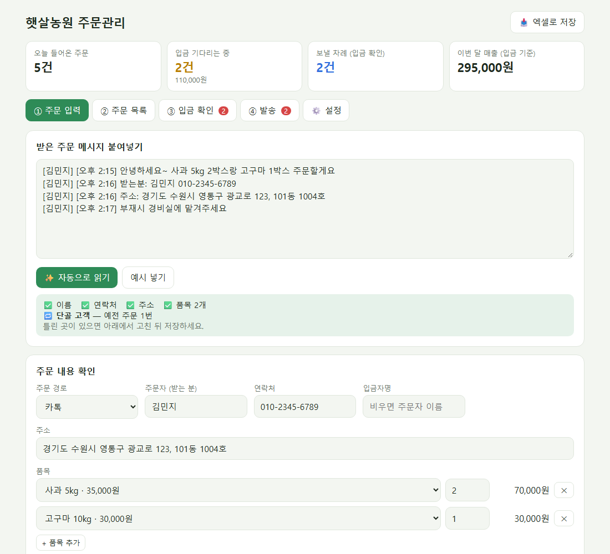
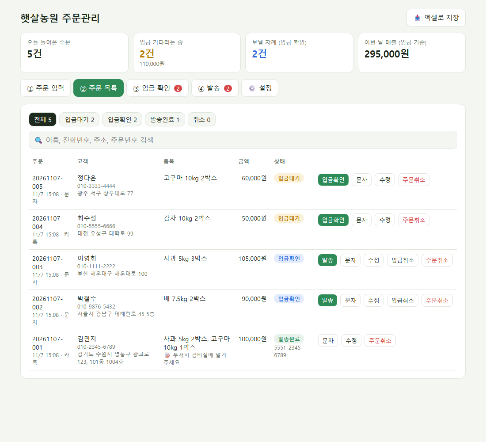

1. 현재 친환경농산물 직거래 주문은 문자·카카오톡으로 접수하여 담당자가 엑셀에 직접 옮겨 적고, 입금은 인터넷 뱅킹 내역을 눈으로 대조하여 확인한 뒤 발송하고 있습니다.
2. 이 과정에서 반복 입력에 따른 시간 소요, 주소·수량 오기, 입금 확인 누락 등의 문제가 발생하고 있어, 이를 개선하기 위해 자체 개발한 「친환경농산물 직거래 주문관리 시스템」의 시범 운영을 아래와 같이 추진하고자 하오니 검토 후 승인하여 주시기 바랍니다.
| 결재 | 담 당 | 차 장 |
|---|---|---|
| 문서번호 | (작성) | 기안일자 | 2026. 11. 7. |
|---|---|---|---|
| 기안부서 | (작성) | 기 안 자 | (작성) |
| 시행일자 | 승인 후 즉시 | 보존기간 | 3년 |
| 제 목 | 친환경농산물 직거래 주문관리 시스템 도입(시범 운영) 승인 요청 | ||
1. 현재 친환경농산물 직거래 주문은 문자·카카오톡으로 접수하여 담당자가 엑셀에 직접 옮겨 적고, 입금은 인터넷 뱅킹 내역을 눈으로 대조하여 확인한 뒤 발송하고 있습니다.
2. 이 과정에서 반복 입력에 따른 시간 소요, 주소·수량 오기, 입금 확인 누락 등의 문제가 발생하고 있어, 이를 개선하기 위해 자체 개발한 「친환경농산물 직거래 주문관리 시스템」의 시범 운영을 아래와 같이 추진하고자 하오니 검토 후 승인하여 주시기 바랍니다.
- 아 래 -
| 구분 | 내용 |
|---|---|
| 사 업 명 | 친환경농산물 직거래 주문관리 시스템 도입(시범 운영) |
| 목 적 | 주문 접수 → 엑셀 주문장 → 입금 확인 → 발송 업무를 한 화면에서 처리하여 업무 시간 단축 및 오류 감소 |
| 주요 기능 | 주문 메시지 자동 읽기 · 엑셀 주문장 자동 기록 · 입금 내역 자동 대조 · 포장 목록/택배 접수 엑셀 · 고객 안내 문자 자동 작성 |
| 추진 기간 | 2026. 11. 9.(월) ~ 12. 4.(금), 4주 (준비 1주 · 시범 운영 2주 · 평가 1주) |
| 소요 예산 | 0원 (자체 개발 완료, 무료 서비스 활용 / 선택 장비는 필요 시 별도 품의) |
| 기대 효과 | 주문 처리 시간 하루 약 70분 단축(추정), 입력 오류·입금 누락 감소, 고객 응대 속도 향상 |
| 시연 주소 | https://wpzl03.github.io/exe/farm-orders/ |
붙임 세부 기획안 1부. 끝.
문자·카톡 주문부터 입금 확인, 발송까지 — 한 화면에서 처리하는 주문관리 도구
| 단계 | 현재 방식 | 문제점 |
|---|---|---|
| 주문 접수 | 문자·카톡 메시지를 보고 엑셀에 이름·연락처·주소·품목을 직접 입력 | 건마다 반복 입력, 주소·수량 오기 발생, 바쁜 시간대 주문 누락 |
| 입금 안내 | 고객마다 계좌·금액 안내 문자를 직접 작성 | 금액 계산 실수, 응답 지연 |
| 입금 확인 | 인터넷 뱅킹 내역과 엑셀을 눈으로 하나씩 대조 | 입금자명이 다르면 확인 어려움, 확인 누락으로 발송 지연 |
| 발송 | 엑셀에서 주소를 다시 옮겨 택배 접수, 송장번호 따로 안내 | 이중 작업, 발송 여부 파악 어려움 |
| 고객 관리 | 과거 주문은 엑셀 파일을 뒤져서 확인 | 단골 고객 주소를 매번 다시 물어봄 |
| 기능 | 내용 |
|---|---|
| 주문 자동 읽기 | 받은 메시지를 붙여넣으면 이름·연락처·주소·품목·수량·배송 메모를 자동으로 찾아 주문서 작성 예) "사과 5kg 2박스랑 고구마 1박스" → 사과 2, 고구마 1 / "배 두 박스" → 배 2 (한글 숫자 인식) |
| 단골 고객 | "사과 3박스 또 보내주세요"처럼 이름만 와도 이전 주문에서 연락처·주소를 자동으로 채움 |
| 주문 목록 | 입금대기 → 입금확인 → 발송완료 단계별 관리, 검색, 수정·취소 |
| 입금 자동 대조 | 인터넷 뱅킹 거래내역 또는 입금 알림 문자를 붙여넣으면 입금자명 + 금액이 일치하는 주문을 찾아 일괄 처리 이름이 다르고 금액만 같은 경우는 "확인 필요"로 따로 표시하여 담당자가 최종 판단 |
| 발송 지원 | 포장 목록 인쇄(품목별 합계 + 상자별 주문 쪽지), 택배 대량 접수용 엑셀, 송장번호 기록 |
| 안내 문자 | 입금 안내 · 입금 확인 · 발송 안내(송장번호 포함) 문자를 자동 작성하여 복사 한 번으로 발송 |
| 엑셀 연동 | 주문장(.xlsx) 저장 및 불러오기, 상품별 판매 수량·금액 집계 시트 자동 생성 |


| 항목 | 내용 |
|---|---|
| 사용 장비 | 현재 사용 중인 업무용 PC (Windows) 그대로 사용, 별도 설치 없음 |
| 실행 방법 | 웹 브라우저(크롬·엣지)에서 주소 접속 또는 파일 더블클릭 |
| 데이터 보관 | 고객 주문 정보는 업무용 PC의 브라우저에만 저장되며 외부 서버로 전송되지 않음 / 매일 엑셀로 백업 |
| 권장 연동 | 카카오톡 PC버전, Windows 「휴대폰과 연결」(문자를 PC에서 복사), 은행 앱 입금 알림 |
| 구분 | 도입 전 | 도입 후 |
|---|---|---|
| 주문 기록 | 메시지를 보며 엑셀에 한 칸씩 직접 입력 | 붙여넣기 → 자동 작성 → 확인 후 저장 |
| 입금 안내 | 계좌·금액 문자를 매번 직접 작성 | 저장 즉시 안내 문자 자동 생성 |
| 입금 확인 | 은행 내역과 엑셀을 한 건씩 눈으로 대조 | 내역 붙여넣기 → 일치 주문 자동 표시 → 일괄 처리 |
| 발송 준비 | 주소를 다시 옮겨 적어 택배 접수 | 택배 접수 엑셀 자동 생성, 포장 목록 인쇄 |
| 진행 현황 | 엑셀을 열어 상태를 일일이 확인 | 입금대기·발송대기 건수와 매출을 첫 화면에 표시 |
| 재주문 고객 | 주소·연락처를 다시 문의 | 이전 주문에서 자동 입력 |
| 항목 (주문 1건 기준) | 도입 전 | 도입 후 | 비고 |
|---|---|---|---|
| 주문서 작성 | 약 2분 | 약 0.5분 | 붙여넣기 후 확인만 |
| 입금 안내·확인 | 약 1.5분 | 약 0.5분 | 자동 대조, 일괄 처리 |
| 발송 준비·안내 | 약 1.5분 | 약 0.5분 | 엑셀·문자 자동 생성 |
| 합계 (1건) | 약 5분 | 약 1.5분 | 건당 약 3.5분 단축 |
| 하루 20건 기준 | 약 100분 | 약 30분 | 하루 약 70분, 월(22일) 약 25시간 절감 |
※ 위 수치는 하루 평균 주문 20건을 가정한 추정치이며, 시범 운영 기간 중 실제 처리 시간을 측정하여 결과 보고 시 수정·보고하겠습니다.
| 항목 | 금액 | 비고 |
|---|---|---|
| 시스템 개발 | 0원 | 자체 개발 완료 |
| 서버·호스팅 | 0원 | 무료 서비스(깃허브 페이지) 활용, 별도 서버 불필요 |
| 유지보수 | 0원 | 자체 수정·관리 |
| 필수 예산 합계 | 0원 | |
| (선택) 감열 라벨 프린터 | 별도 품의 | 택배사 계약 시 지원 여부 먼저 확인 |
| (선택) 전자저울 (30kg급) | 별도 품의 | 상자 중량 확인용, 필요 시 |
| 단계 | 기간 | 주요 내용 | 11/9주 | 11/16주 | 11/23주 | 11/30주 |
|---|---|---|---|---|---|---|
| 1. 준비 | 11. 9.(월) ~ 11. 13.(금) | 상품·가격·계좌 설정, 담당자 사용 교육(1시간), 고객용 주문 양식 배포 | ||||
| 2. 시범 운영 | 11. 16.(월) ~ 11. 27.(금) | 기존 엑셀 방식과 병행 운영, 처리 시간·오류 건수 기록 | ||||
| 3. 평가·보고 | 11. 30.(월) ~ 12. 4.(금) | 시범 운영 결과 보고, 개선 사항 반영, 본 운영 여부 결정 |
※ 시범 운영 기간에는 기존 엑셀 주문장도 함께 작성하여, 문제가 생겨도 업무에 지장이 없도록 합니다.
| 위험 요소 | 대응 방안 |
|---|---|
| 자동 읽기 오류 (메시지 형식이 제각각) | 저장 전 반드시 담당자가 확인·수정하는 단계를 둠 / 고객에게 주문 양식(이름·연락처·주소·품목) 안내로 정확도 향상 |
| 데이터 유실 (브라우저 기록 삭제 등) | 매일 업무 마감 시 「엑셀로 저장」으로 백업, 지정 폴더에 보관 / 엑셀에서 다시 불러오기 가능 |
| 고객 개인정보 보호 | 고객 정보는 업무용 PC에만 저장되고 외부로 전송되지 않음 / 공개된 시연 주소에는 프로그램만 있고 고객 데이터는 없음 / 백업 엑셀은 지정 폴더에서만 관리, 보관 기간 경과 시 삭제 / PC 화면 잠금 사용 |
| 카톡·은행 자동 연동 불가 | 카카오톡(개인)·인터넷 뱅킹은 외부 프로그램 연동을 지원하지 않으므로 복사·붙여넣기 방식으로 설계 (보안상 오히려 안전) |
| 담당자 적응 | 화면을 업무 순서(① 입력 → ② 목록 → ③ 입금 → ④ 발송)대로 구성 / 준비 기간에 사용 교육 실시 |